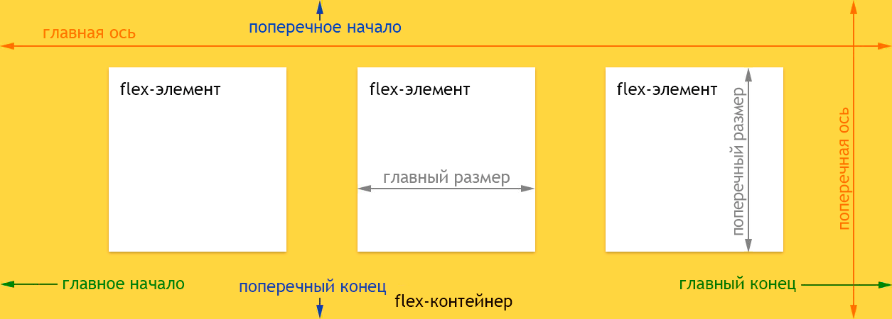

Флексбоксы (Flexbox, от flexible box — гибкие блоки; или Flexible Box Layout Module) дают веб-разработчикам контроль над расположением элементов, их выравниванием и размерами внутри контейнера. Это позволяет выравнивать элементы по вертикали и горизонтали; менять порядок их появления; задавать направление, в котором выкладываются все элементы, и многое другое.
Прежде чем мы начнём с описания свойств flexbox, давайте немного ознакомимся с этой моделью. Она состоит из родительского контейнера, называемого flex-контейнером, и его непосредственными дочерними элементами, которые называются flex-элементами.

На картинке выше вы можете увидеть свойства и терминологию, используемые для описания flex-контейнера и его дочерних элементов.
Чтобы использовать flexbox, просто установите свойство display для родительского элемента:
.page-wrap {
display: -webkit-box; /* iOS 6-, Safari 3.1-6 */
display: -moz-box; /* Firefox 19- */
display: -ms-flexbox; /* IE 10 */
display: -webkit-flex; /* Chrome */
display: flex;
}
Eсли вы хотите отобразить его как строчный элемент, то:
.flex-container {display: inline-flex;}
Это единственное свойство, которое необходимо установить для родительского контейнера, и все его непосредственные дочерние элементы автоматически станут flex-элементами и, следовательно, размещаются с учётом модели флекс-вёрстки.
- Все свойства column-* не оказывают влияния на flex-контейнер.
- Псевдоэлементы ::first-line и ::first-letter не применяются к flex-контейнерам.
- Свойства float, clear и vertical-align не оказывают влияния на flex-элемент и не вырывают его из потока.
Выравнивает строки внутри флекс-контейнера при наличии свободного пространства по поперечной оси.
Выравнивает флекс-элементы внутри контейнера в перпендикулярном направлении.
Свойство flex-direction определяет, как флексы располагаются в контейнере относительно основных осей и их направление.
Является сокращённым свойством для отдельных свойств flex-direction и flex-wrap.
Указывает, следует ли флексам располагаться в одну строку или можно занять несколько строк.
Определяет, как браузер распределяет пространство вокруг флекс-элементов вдоль главной оси контейнера.
Сокращённое свойство place-content одновременно устанавливает значения свойств align-content и justify-content.
Задаёт выравнивание отдельного элемента в контейнере по поперечной оси.
Сокращённое свойство, которое позволяет указать параметры элемента, чтобы он эффективно заполнял доступное пространство.
Свойство flex-basis определяет основу флекса, которая является начальным размером элемента.
Определяет, сколько пространства может занимать флекс внутри контейнера.
Определяет коэффициент сжатия флексов в контейнере.
Определяет порядок вывода флексов внутри флекс-контейнера.